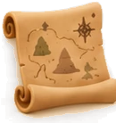
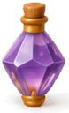

AI Tool
CRAN
A creative analytics dashboard, built with Claude

I. What I BuiltI built something out of a mundane routine I do at work, and it saved me 6 hrs a week while helping me make faster decisions.
CRAN is a creative analytics dashboard that shows how each creative is performing across your ads in a single view. For the creatives you spend money on every day, you see performance, get change recommendations and spot alerts, all at once.
“No more switching tabs. No more making spreadsheets. No more guessing what worked.”

II. What I LearnedCoding is no longer a superpower, thanks to Claude. You can't be an average marketer waiting for things to change.
I've personalised this dashboard with the skills and goals I wanted, and hosted it locally. It can be made better with universal standards and frameworks to judge creative assets for broader access.